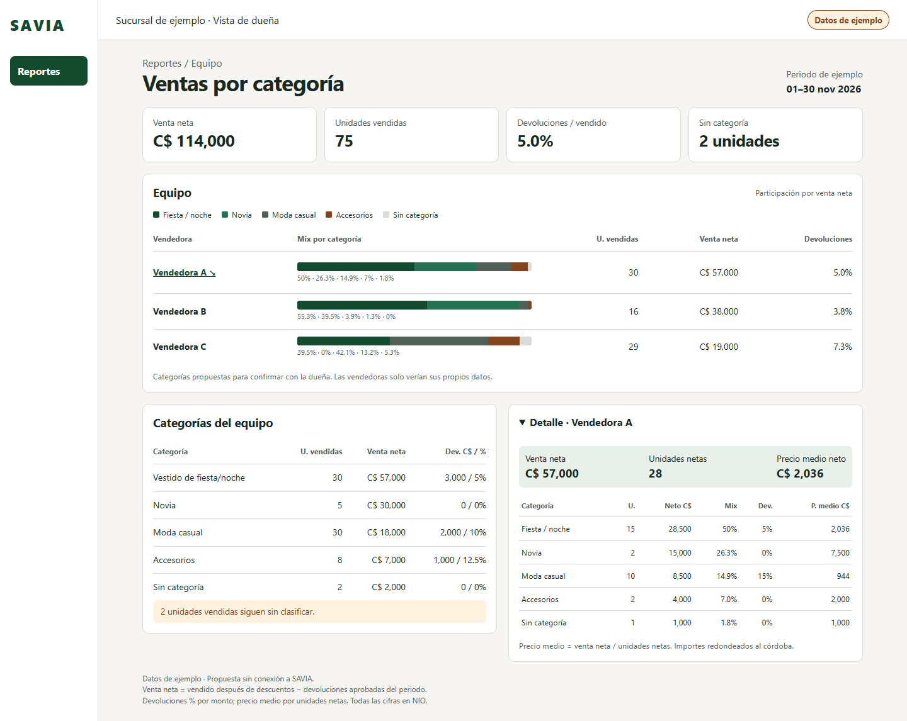
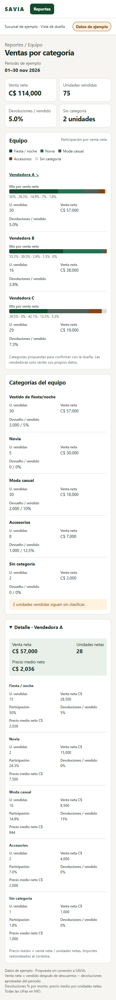

Hoy SAVIA sabe cuánto vende cada vendedora, pero no qué vende. La propuesta es registrar la categoría de cada prenda (fiesta/noche, novia, casual, accesorios, calzado) y ver el mix de cada vendedora.


Fuentes oficiales: vacantes, informes y presentaciones de cada empresa. Son metas o descripciones de puesto, no benchmarks universales.
| Tienda | Qué miden o piden | Fuente |
|---|---|---|
| Selfridges | Ventas vs. plan, margen, prendas por ticket, ticket promedio, venta por hora, captura de datos de la clienta. | Vacante |
| Harrods | Venta mínima por hora, metas individuales, ofrecer productos relacionados. | Vacante |
| Sephora | Conversión, artículos por cesta, cesta media, satisfacción. | Vacante |
| Kleinfeld | Conversión de citas de novia; vender vestido, tocado y accesorios como conjunto. | Empleos |
| David’s Bridal | Conversión de 65% o más. Metas de complementos: tocado 75%, prendas de base 10%, zapatos 20%. | Vacante |
| Pronovias | Objetivos de venta y eficiencia, citas preparadas, cartera de clientas. | Vacante |
| Neiman Marcus · NET-A-PORTER | Clientas que vuelven, cartera, citas, gasto por clienta. | NM · NAP |
| Louis Vuitton · LVMH | Asesoras por categoría; ventas y sell-through por categoría; conversión y retención. | LVMH · LV |
| Inditex / Zara | Comisión mensual de tienda ligada a resultados, no solo individual. Extracto parcial del informe. | Informe 2024 |
| Uniqlo | Ventas por empleado y satisfacción por tienda. Dato declarado por la empresa. | Presentación |
| Riesgo | Cómo evitarlo |
|---|---|
| Ignorar a la clienta casual esperando una novia. | Una parte del bono por equipo, como hace Inditex. Mostrar ventas casual por separado. |
| La vendedora A atiende la prueba y la B cobra la venta. | Registrar quién atendió la prueba. Repartir el crédito sin duplicar el monto. |
| Vestidos devueltos después de usarlos en una fiesta. | Devoluciones por categoría y por vendedora, ligadas a la venta original. |
| Rankings injustos por turnos o sucursal. | Comparar dentro de la misma sucursal. Mirar tendencias de semanas, no un día. |
| Reclasificar una prenda cambia reportes pasados. | Guardar la categoría al momento de vender. |
SAVIA ya guarda el costo de cada prenda en el momento de la venta, y no deja vender una prenda sin costo. La ganancia por vendedora no necesita datos nuevos.
Propuesta: una devolución se descuenta a la vendedora que hizo la venta original, en el mes de la devolución.
Una prenda puede servir para varias ocasiones. Un vestido largo negro sirve para gala y para invitada de boda. Unas sandalias doradas para novia son calzado, pero también son de novia.
Con A: sandalias doradas de novia → calzado. Vestido largo negro → fiesta/noche.
Hoy muchas prendas no tienen categoría. Ejemplo: en noviembre la Vendedora A vende 10 prendas sin categoría. En diciembre las clasificas como fiesta.
Tu comentario se puede leer de dos formas: solo dueña y admin, o también la gerente para su tienda.
Además, SAVIA no tiene un rol “admin”. Hoy existen: dueña, gerente, cajera, inventario, contadora y vendedora. ¿“Admin” es la contadora o un rol nuevo?
Recomendación: dueña siempre; gerente solo la de su tienda; contadora sí; vendedora y cajera no. Es tu decisión.